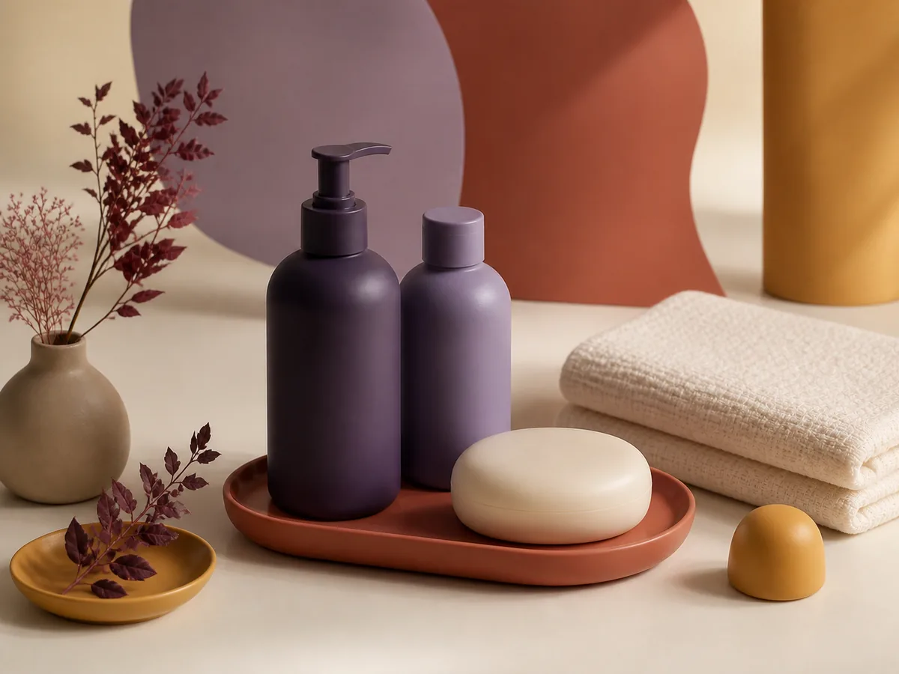
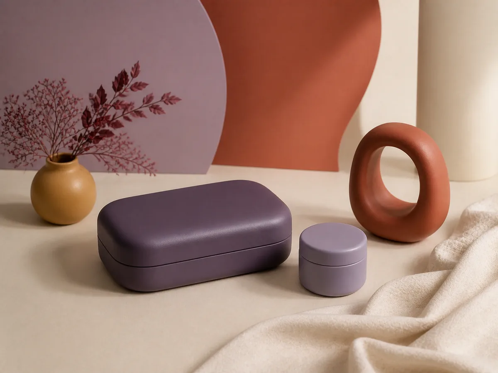
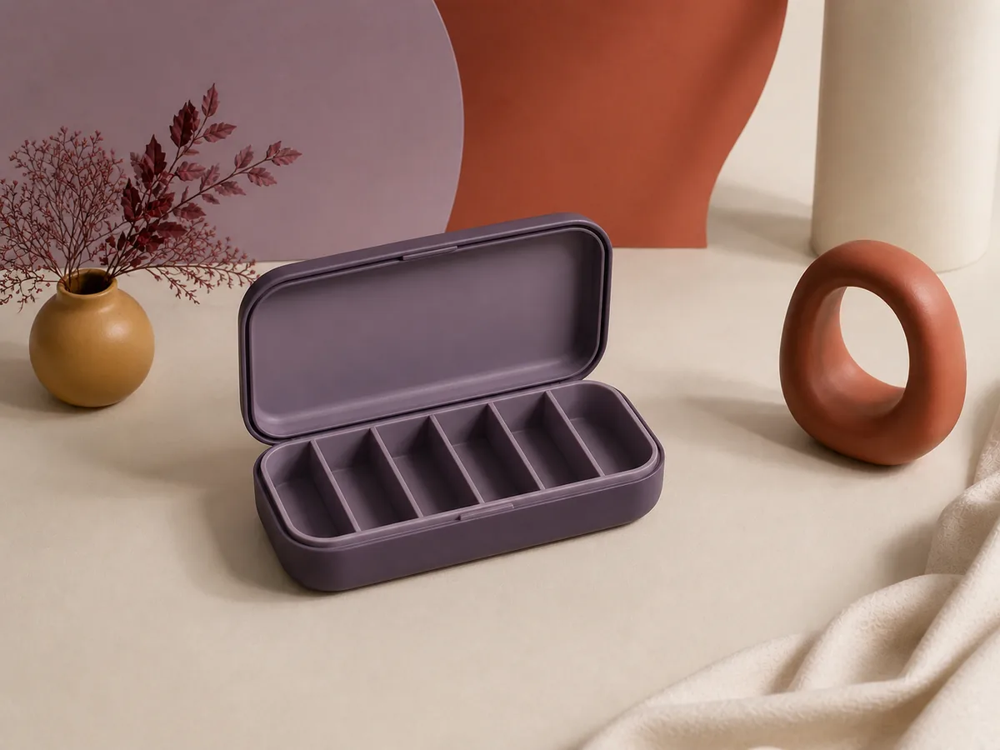
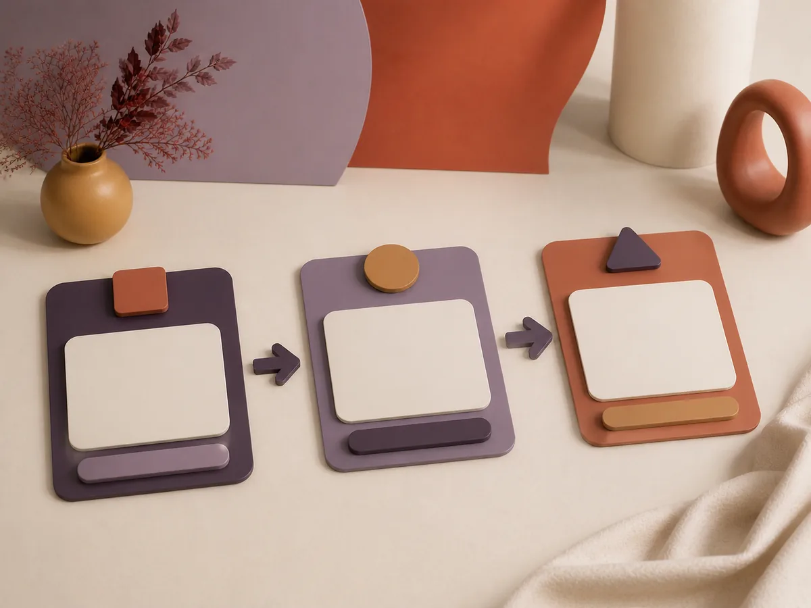
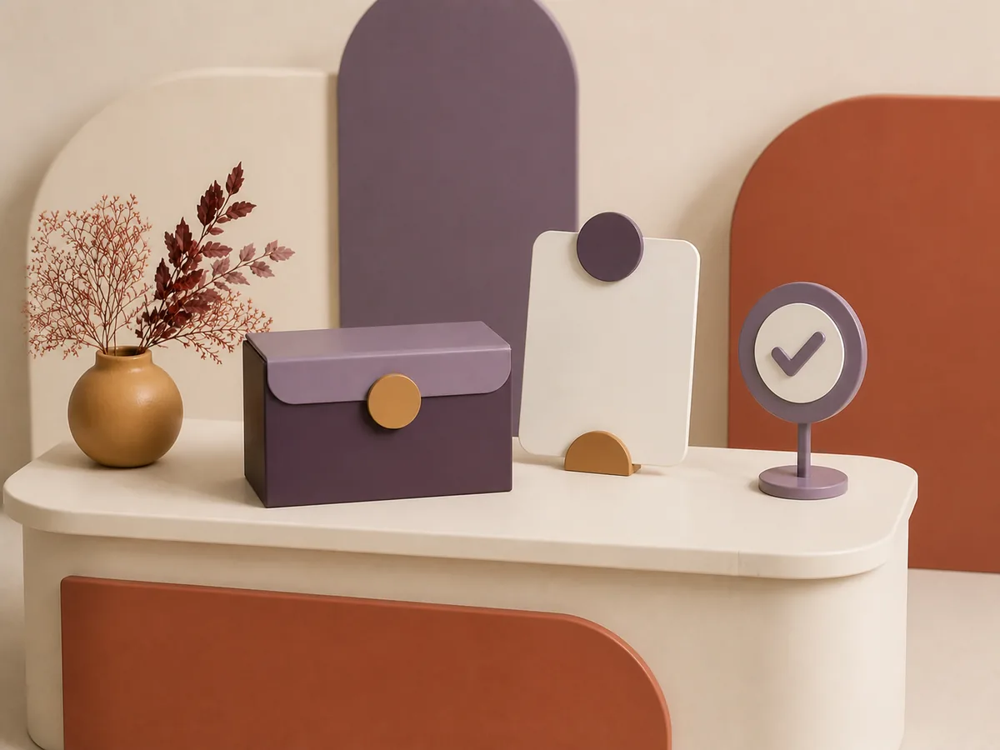

Apresentação de serviços
Estrutura conceitual para explicar modalidades de atendimento de forma clara.
Exemplo fictício de uma solução digital para apresentar serviços, consultar um catálogo demonstrativo e visualizar etapas de atendimento sem enviar ou armazenar informações.
Serviços principais
Os recursos abaixo ilustram categorias que poderiam ser definidas em um projeto real conforme o escopo e os requisitos aplicáveis.
Estrutura conceitual para explicar modalidades de atendimento de forma clara.
Exemplos genéricos organizados por categorias, sem preços ou produtos reais.
Fluxo local para visualizar escolhas e etapas sem transmitir informações.
Cenário fictício de organização administrativa e estados demonstrativos.
Catálogo demonstrativo
Todos os itens são genéricos e fictícios. Não há preços, estoque, medicamentos, compra, entrega ou alegações terapêuticas.
Exibindo 6 itens demonstrativos.
Composição conceitual para representar itens genéricos de uma rotina pessoal.

Exemplo visual sem marca, composição, indicação ou característica comercial.

Referência neutra para uma categoria de itens cotidianos não regulados.

Objeto conceitual vazio, sem medicamentos, posologia ou recomendação de uso.

Exemplo de organização inicial, sem orientação médica ou atendimento real.

Simulação visual de uma etapa administrativa, sem reserva, produto ou entrega.
Nenhum item demonstrativo corresponde à busca ou ao filtro selecionado.
Fluxo de atendimento
As escolhas existem somente enquanto esta página permanece aberta e desaparecem ao atualizar.
Documento visual
Esta interface não abre o seletor de arquivos. Nenhuma receita ou documento real é escolhido, enviado, analisado ou armazenado.
Painel demonstrativo
Indicadores ilustrativos para apresentar como informações poderiam ser organizadas. Não representam dados de operação real.
exemplos em análise
aguardando confirmação
catálogo demonstrativo
documento real recebido
Perguntas frequentes
As respostas esclarecem os limites desta interface conceitual.
Não. Íris Cuidados é uma marca fictícia criada pela Áurea Digital apenas para esta demonstração.
Não. Não existem produtos reais, preços, estoque, carrinho, entrega ou pagamento nesta página.
Não. A seção de documento é somente visual e não permite selecionar ou enviar qualquer arquivo.
Não. A demonstração não solicita dados pessoais ou de saúde e não utiliza armazenamento local.
Não. Ela não oferece diagnóstico, recomendação, prescrição ou atendimento em saúde.
Sim, quando forem adequadas ao projeto e definidas no escopo, com avaliação dos requisitos técnicos, legais e de privacidade.
Retorne ao site da Áurea Digital para conhecer os serviços e conversar sobre uma necessidade real.